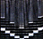
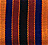
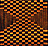
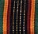
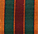

African & Navajo (Navaho) Patterns
I am greatly attracted to textiles
(as if this news will come as a surprise to all who know me). Our ethnic textiles
have vibrant colors and are most often named after something or someone, signifying
their importance as part of our lives. I use the African and Navajo prints you
see on my homepage to create or design various types of ornaments for Christmas,
baby/bridal showers, weddings, valentine/romance, keepsake, etc. Each of the
African prints has an Igbo (Nigerian) name as follows:
 "Afa" or "Efa"
means name.
"Chi" means guiding light, God or god.
 "Obi" has
several meanings depending on usage and pronunciation. As a part of a personal
name, it means heart, wish or mind. "Obi" is also a title for some Igbo
chiefs, such as, the "Obi of Onitsha" (the Chief of Onitsha,
a town in Eastern Nigeria). It also means, home or a chief's or king's palace.
 "Opuriche"
means unique, or different.
 "Uba" means
wealth.
 "Uju" means
plenty.
I identify the Navajo prints by number or color such as turquoise,
and terra cotta.

(1) Rust

(2)

(3) Purple

(4) Turquoise
Return to my homepage.
Send
comments to me.
For more information on African fabrics and textiles, see
my compilation at:
http://www.chiamaka.com/Language.htm
For more information about my ornaments, visit my site at: http://www.chiamaka.com
11/99; upd. 08/2001.